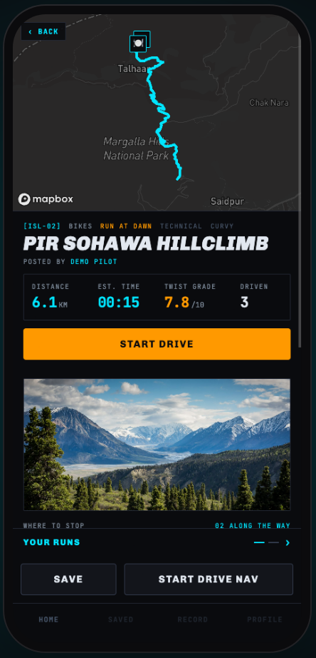

Find a road
A feed of routes filtered by tag and vehicle. Sort by nearest, newest, best-rated, twistiest, or what people are actually driving this month.
SORT › TWISTIEST
Islamabad · 21 roads · graded by twist
Navigation apps answer how do I get there? Roam answers where should I go. Roads worth driving, posted by the people who drove them.
What it does
Not for commuting. Not for getting anywhere on time. Nothing in Roam optimises for arrival.
A feed of routes filtered by tag and vehicle. Sort by nearest, newest, best-rated, twistiest, or what people are actually driving this month.
SORT › TWISTIEST
Distance, time, a twist grade scored from how much the road really turns, stops placed by whoever posted it, and reviews from people who drove it.
TWIST GRADE › 7.8/10
A departure-time profile sampled across the day, with the quiet window named. No guessing whether 8 pm is a mistake.
QUIET WINDOW › 04:00
A timer on wall-clock time. It survives the phone locking, pauses when you stop, and follows you anywhere in the app.
ELAPSED › 00:15
Every run is logged against the route's own estimate, with personal bests marked. Find out whether you're actually getting quicker on your local hill.
PERSONAL BEST › −0:42
Drop pins and the line snaps to real roads. Add stops, photographs, notes. The road you loved stops being a secret.
STOPS › ⛽ ☕ 🍽 ▲
Every road gets a number
6.1 km. 15 minutes. Twist grade 7.8 out of 10. Measured, not guessed: calibrated against real Islamabad roads from 193 to 728 degrees of turn per kilometre.

Know when to leave
Live traffic data barely exists here, so Roam samples every route across the day and tells you the quiet window. Same road, same car, 70 minutes apart.
Built where maps fail
Most mapping products quietly don't work here. We tested them, then built around what's actually true.
All 5,061 segments came back unknown. So we profile the whole day instead.
"Monal" returned nothing. "Pir Sohawa" landed 200 km away. OpenStreetMap found every one.
Category search found nothing. Stops are placed by the person who's been there.
The first scale pinned every road at the top. Recalibrated so the number actually tells roads apart.
Roam is where they write it down. Find your next Sunday drive, or post the one you keep meaning to tell people about.